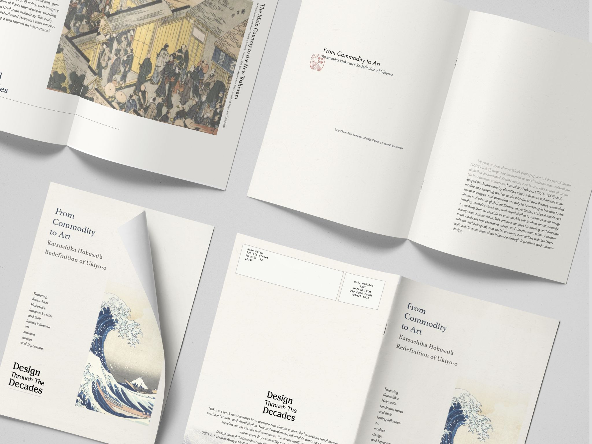

A publication concept exploring rhythm, repetition, and visual pacing through the lens of Katsushika Hokusai's visual systems. The project studies how editorial structure, Prussian blue, vertical text flow, and small red seal details can create a reading experience that feels calm, historical, and intentional.
Editorial Design · Visual Storytelling · Publication System · 2025
This project helped me understand how to build a consistent editorial style from historical visual references without letting the design become purely decorative. I learned to use pacing, spacing, repetition, restrained color, and clear hierarchy to make the publication feel visually unified while still supporting a calm and reader-friendly reading experience.
Working with Hokusai's source material also meant being deliberate about how much of the original composition to preserve versus reinterpret — a smaller Prussian-blue palette, a consistent grid, and generous whitespace let the historical imagery carry the page without competing with it. That restraint is the same instinct I rely on in interface work: give the content room, and let structure do the work instead of decoration.